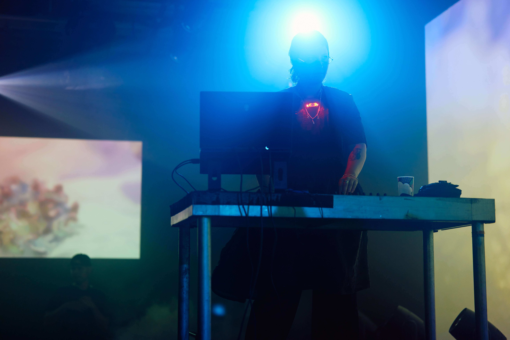
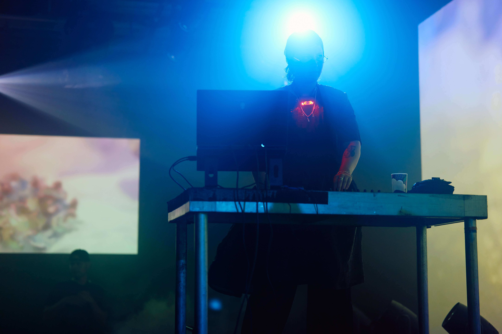

Psychotropical, Live A/V @ Mutek Montreal, 2023
Honeydrip's debut live set, Psychotropical, pays homage to dub, reggae, and dancehall while maintaining her signature bassy dancefloor sound. With vocalist King Shadrock and A/V wizard Emma Forgues, the performance, inspired by psychotropic experiences, features 3D scans of the artists' bodies and psychedelic landscapes. The audiovisual journey explores thought-provoking Rastafarian themes, offering a deep tropical experience that traverses emotions and movements.
a collaboration with
Honeydrip && King Shadrock
Presentation
Psychotropical Live AV @ Homegrown Harvest Wall Of Sound w/ Daniel Avery, Kia, Priori & more.
October 2023
WORLD PREMIERE ~ Psychotropical Live AV @ Mutek Montréal
August 2023
Teaser Credits
Producer, Composer, & Artistic Direction: Tiana McLaughlan (Honeydrip)
Visual Artist & Artistic Direction: Emma Forgues
Vocalist: Howard Arthur Johnson
Camera: Nick Jewell (Transmission)
Audio Capture: James Benjamin (Transmission)
Costume Design: Amesika Beckley
Video Editing: Emma Forgues
Photo Credits: Vivien Gaumand


 



THANKS!